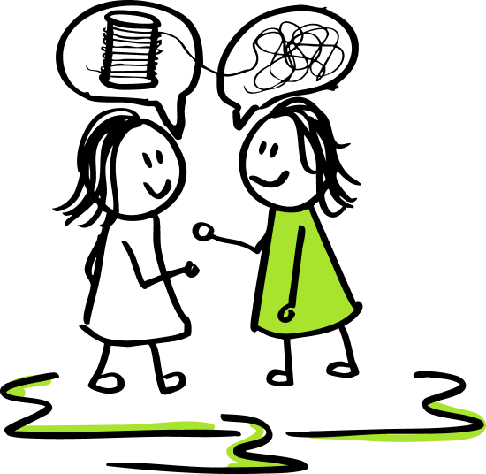

De KIEMscan is passend wanneer:
- De basis op orde is, maar de ambitie stokt
- Data wordt besproken, maar niet altijd wordt begrepen of vertaald naar handelen
- De inspectie nadert en het verhaal nog niet stevig voelt
- Een nieuwe schoolleider snel overzicht wil
- Een bestuur scherp zicht wil op ontwikkelprioriteiten
Dan is het tijd om kwaliteit in samenhang te bekijken.
